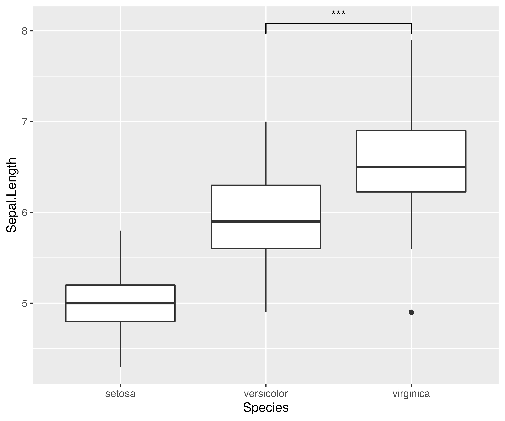
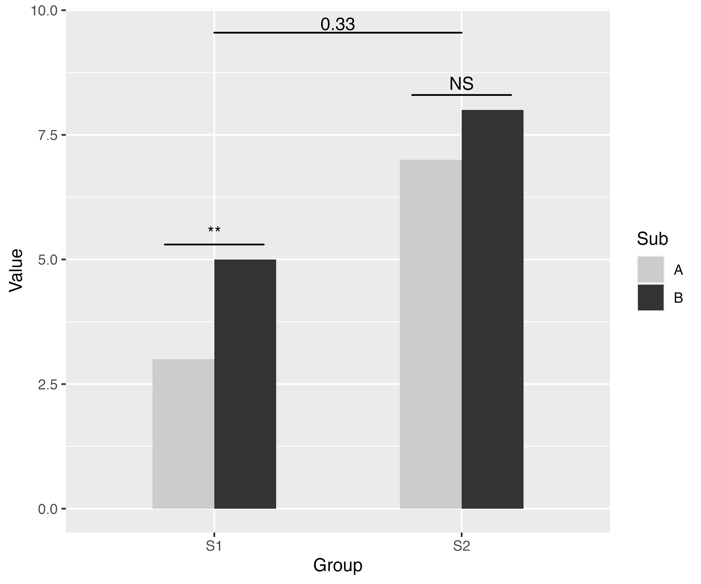

Introduction to 'ggsignif' package
Constantin Ahlmann-Eltze and Indrajeet Patil
2023-05-30
Source:vignettes/intro.Rmd
intro.RmdStatement of Need
Research hypotheses often concern with differences between two or
multiple groups and significance-based hypothesis testing can provide
indices for evidence for such differences. Naturally, when people are
visualizing such group differences, they might also wish to quickly
annotate if the difference between two levels of group in a plot is
significantly different (look
at
all
those
questions).
This package does exactly that! It provides a single layer
geom_signif which can calculate the significance of a
difference between groups and add the annotation to the plot in a single
line. In doing so, it further extends the fundamental strength of
ggplot, which allows one to quickly make advanced plots by
combining layers of visualization, which can encapsulate complex
statistical methods (geom_smooth, geom_contour
etc.).
How to use it?
Simple case
First step: load the needed packages.
Second step: plot your data.
ggplot(iris, aes(x = Species, y = Sepal.Length)) +
geom_boxplot() + # using `ggsignif` to display comparison of interest
geom_signif(
comparisons = list(c("versicolor", "virginica")),
map_signif_level = TRUE
)
That’s it, it is as simple as that!
Note that, if we were to statistically analyze this data, we would
run a one-way ANOVA to assess if any of the group means differ
from each other and then follow up with post hoc multiple
comparisons to do more fine-grained comparisons between different levels
of the group. The ggsignif package provides a way to
graphically display all or a few (depending on the research hypotheses
context) of such comparisons.
Advanced options
Sometimes one might need more advanced control over the display. For example, instead of a one-way ANOVA design, you can have a complex multiway-ANOVA design. In such instances, you may wish to have a much finer control over which comparisons to include for pairwise comparison displays.
To specify exactly where the bracket is drawn use the
y_position, xmin and xmax
parameters combined with a custom annotations. This is
always necessary if geom_signif is combined with another
layer that uses position="dodge", because it changes the
location of the visual elements without updating the data.
dat <- data.frame(
Group = c("S1", "S1", "S2", "S2"),
Sub = c("A", "B", "A", "B"),
Value = c(3, 5, 7, 8)
)
ggplot(dat, aes(Group, Value)) +
geom_bar(aes(fill = Sub), stat = "identity", position = "dodge", width = .5) +
geom_signif(
y_position = c(5.3, 8.3), xmin = c(0.8, 1.8), xmax = c(1.2, 2.2),
annotation = c("**", "NS"), tip_length = 0
) +
geom_signif(
comparisons = list(c("S1", "S2")),
y_position = 9.3, tip_length = 0, vjust = 0.2
) +
scale_fill_manual(values = c("grey80", "grey20"))
For more detailed documentation of the available parameters see the
manual page for the geom_signif function: https://const-ae.github.io/ggsignif/reference/stat_signif.html
Bugs, Comments or Questions?
If you have any problems with the package, just file an issue at https://github.com/const-ae/ggsignif.